Using the Animation Editor
Using the Animation Editor
Roblox Studio features a powerful, built-in Animation Editor which allows you to design and publish custom animations.
Model Requirements
The animation editor can be used for both stock human characters or non-human models, as long as all moving parts are connected with Motor6D objects. Assuming your model is compatible, follow these steps to begin creating an animation:
- Click the Animation Editor button in the Plugins tab.
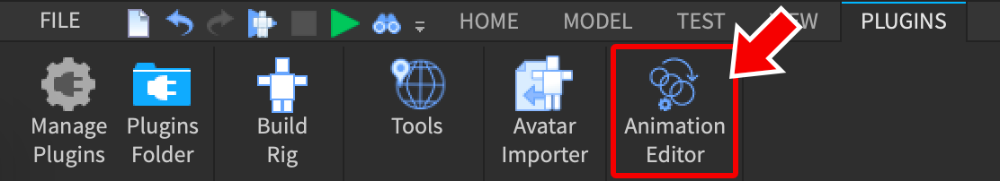
- Select the rig to define animations for.
- If prompted, type in a new animation name and click Create in the dialog.
- The editor window will open, showing a tracklist and the animation timeline.
Using Default Rigs
If you’re new to Roblox animation, it’s recommended that you start with one of the default rigs created through the Build Rig button in the Plugins tab. These rigs already contain the basic parts and mechanisms to build a character animation.
Creating Poses
To animate a rig, you’ll need to define poses by moving/rotating specific parts like the head, right hand, left foot, etc. When the animation runs, it will smoothly animate the rig from pose to pose.
Consider a simple animation where a human character turns its head 45° to the left. This animation involves two poses — the initial position of the head (looking forward) and the turned position of the head (looking left).
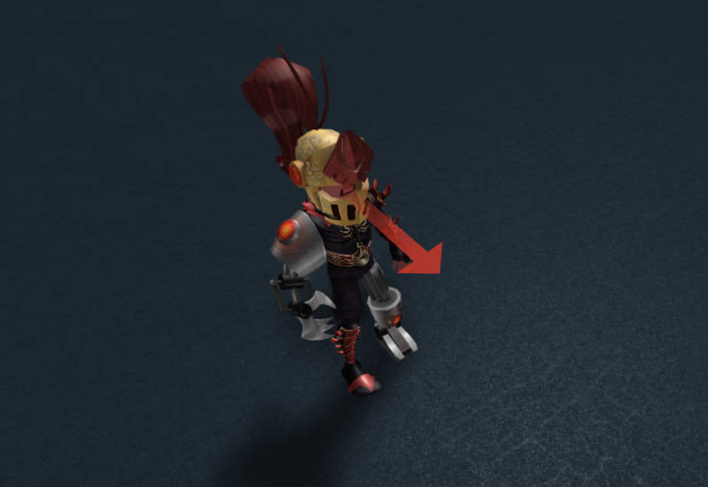
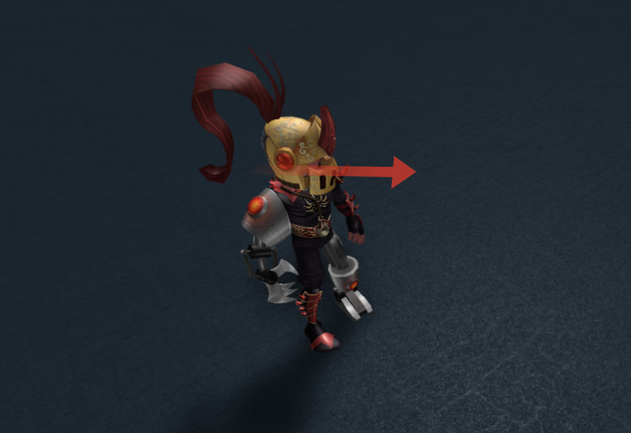
To create a new pose:
- Move the scrubber bar to the time/frame position where you want to set the pose, for example 0:15. By default, timeline units are expressed as seconds:frames and animations run at 30 frames per second, so 0:15 indicates ½ second.
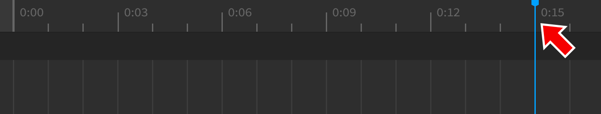
- Hover your mouse over the rig and click on a part to select it.
- Move and/or rotate the part to the desired orientation. When you do so, a track will be created and a new keyframe will be created along the timeline, indicated by the diamond symbol.
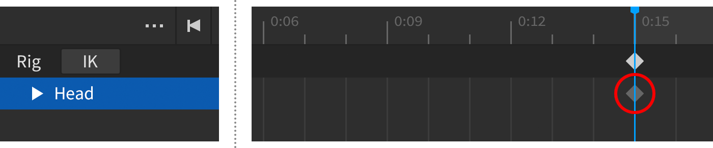
- Continue moving or rotating parts until you get the desired pose. Whenever you adjust a specific part, a keyframe is defined for that part at the selected time/frame.
- When you’re ready to preview the animation, press the small Play button in the upper-left section of the editor window. Animations can also be played/paused with Spacebar.
Adjusting the Timeline Duration
By default, the timeline displays a duration of 1 second (30 frames), although the animation’s actual duration will be determined by the final keyframe. To add more time to the timeline view, enter a new value in the right-side box of the position indicator:
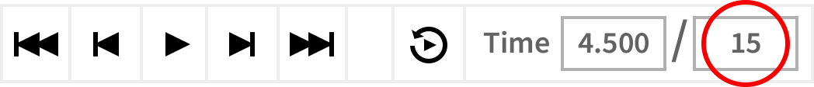
Working With Keyframes
Once you define basic poses for a rig, fine-tuning individual keyframes can significantly improve the final animation.
Adding Keyframes
As shown in the poses section above, keyframes are automatically added when you change a part’s orientation anywhere along the timeline. In addition, keyframes can be added as follows:
- For a single part of the rig, move the scrubber bar to a new position, click the
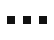
button for a track, and select Add Keyframe.
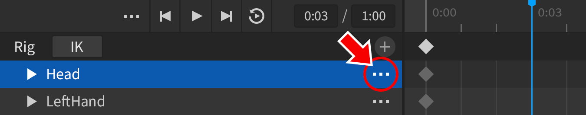
- For multiple parts of the rig, right-click in the region above the tracks and select Add Keyframe Here. Note that the keyframes will be inserted at the time/frame closest to where you click, not at the position of the scrubber bar.
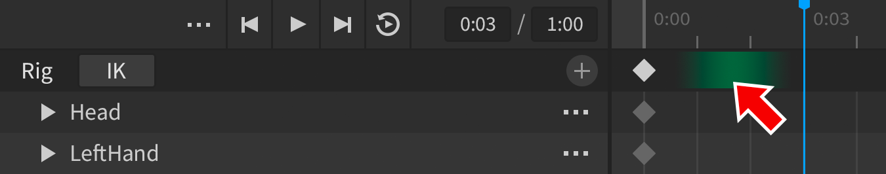
Moving Keyframes
To increase or decrease the amount of time between a keyframe and a neighboring keyframe:
- Click on any keyframe in the timeline. Alternatively, you can select all keyframes at a specific position by clicking the diamond symbol in the upper bar. Selected keyframes will be surrounded with a blue border.
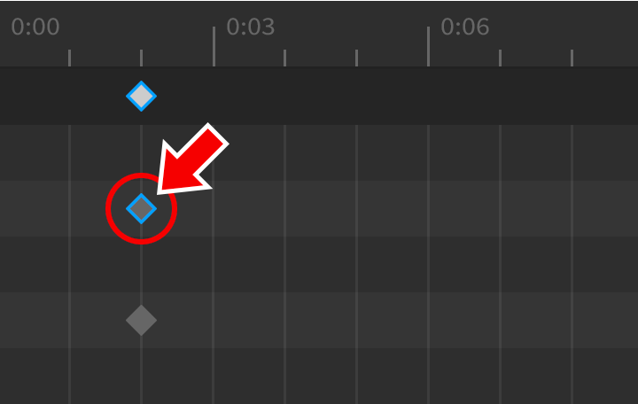
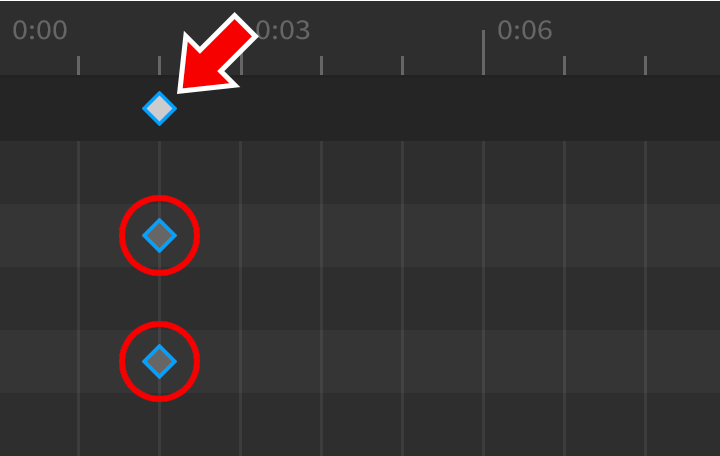
- Drag the keyframe(s) left or right into a new position.
Copying Keyframes
A specific keyframe (or keyframes for multiple parts) can be copied and pasted to a new position in the timeline.
- Select one or more keyframes as outlined in step #1 of the section above.
- Press Control+C (Command ⌘+C on Mac).
- Move the scrubber bar to a new position.
- Press Control+V (Command ⌘+V on Mac). The keyframe(s) will be copied to that position.
Deleting Keyframes
One or more keyframes can be deleted by simply selecting them and pressing Delete or Backspace.
Animation Easing
Easing is an important concept in animation. By default, a part will move/rotate from one keyframe to the next in an even, steady motion known as linear easing.
As you can see, linear easing makes the character’s kick animation appear stiff and robotic. While that may look appropriate for some motions, compare the following video where cubic easing is applied to make the leg animate more naturally.
To change easing for one or more keyframes:
- Select the keyframe(s).
- Right-click and choose an option from the Easing Style and/or Easing Direction context menus.
| Easing Style | Description |
|---|---|
| Linear | Moves at a constant speed. |
| Constant | Removes interpolation between the selected keyframe and next keyframe (animation will "snap" from keyframe to keyframe). |
| Cubic | Eases in or out with cubic interpolation. |
| Elastic | Moves as if the object is attached to a rubber band. |
| Bounce | Moves as if the start or end position of the tween is bouncy. |
| Easing Direction | Description |
|---|---|
| Out | The motion will be faster at the beginning and slower toward the end. |
| InOut | In and Out on the same tween, with In at the beginning and Out taking effect halfway through. |
| In | The motion will be slower at the beginning and faster toward the end. |
Inverse Kinematics
When animating characters, inverse kinematics (IK) can help calculate rotations for neighboring joints in order to get one specific joint to a desired location.
To begin editing an animation in IK mode:
- Click the IK button in the animation editor.
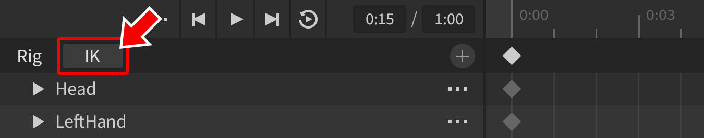
- Near the bottom of the window that opens, click Enable IK.
IK Modes
IK features both Body Part mode (exclusive to /articles/r6 vs r15 avatars|R15/Rthro rigs) and Full Body mode. This can be toggled from the IK window.
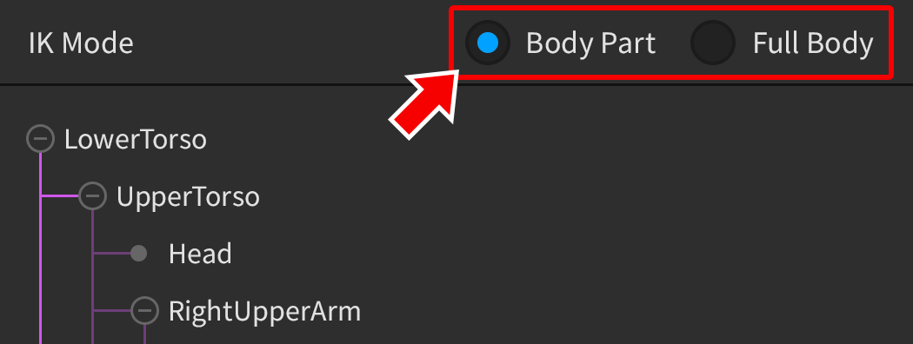
| Body Part Mode | Full Body Mode |
|---|---|
| Isolates movement to related limbs. For example, moving the RightHand part will only affect parts that compose the right arm. | The IK solver will consider all joints when moving a specific part. However, you may exclude specific parts from this process by pinning them (see below). |
Pinning Parts
When editing an animation in Full Body mode, you can pin a part to make it immovable. In the following video, both feet are pinned and remain stationary while moving other parts, but either foot can still be directly manipulated.
To pin a specific part, click the pin icon next to its name. Remember that Full Body mode must be enabled to use this feature.
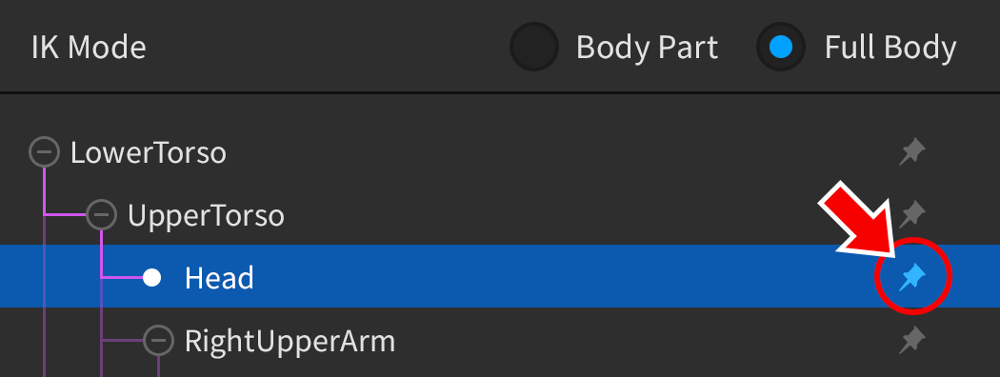
Exiting IK Mode
To return to “forward kinematics” mode, click on Disable IK near the bottom of the IK window. Note that this will not remove any manipulations you made while in IK mode — that data will remain stored in any keyframes which were created while IK was applied.
Animation Settings
Looping
When designing an animation in the editor, you can toggle on the Looping button to make it automatically loop:
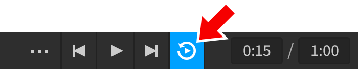
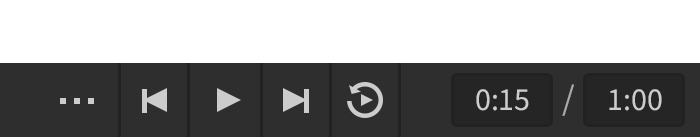
Priority
In an actual game, you’ll probably use unique animations for different player actions and states, for instance a jump animation and an “idle” animation. Logically, the jump animation should take priority over the idle animation so that characters don’t perform both at the same time.
You can set one of four priority levels as follows:
- Click the button in the upper-left section of the editor window.
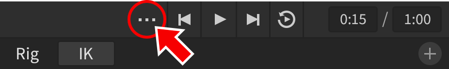
- Choose an option from the Set Animation Priority menu. In a game, if you play an animation with a higher priority than one that’s already playing, the new animation will override the old.
| Core | Idle | Movement | Action |
Animation Events
Animation event markers can be defined across the timeline span and AnimationTrack/GetMarkerReachedSignal|GetMarkerReachedSignal() can be used to detect those markers as the animation runs.
Showing Events
By default, the event track isn’t visible. To reveal it:
- Click the gear button to the right of the timeline.
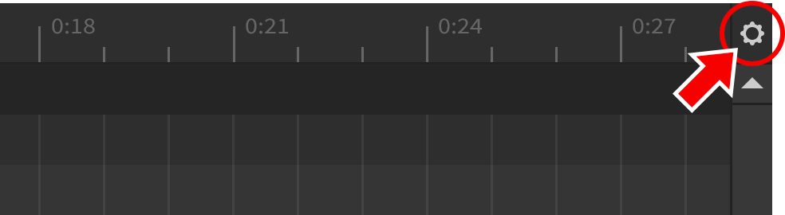
- Select Show Animation Events. This will open the events bar directly below the control bar.
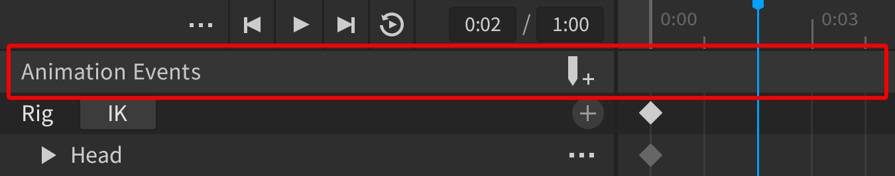
Creating Events
To create a new event marker:
- Position the scrubber bar at the point along the timeline where the event should occur.
- Click the Edit Animation Events button to edit markers at the selected position.
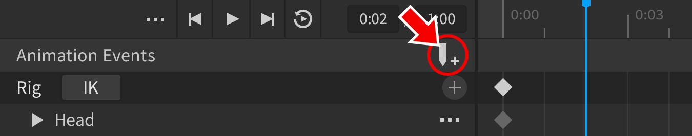
- In the popup window, click Add Event and enter an event name.
- In the Parameter field, you can enter a parameter string for the event, outlined in more detail below.
- When ready, click Save to register the event. In the events bar of the editor, you’ll see a new marker symbol at the selected position.
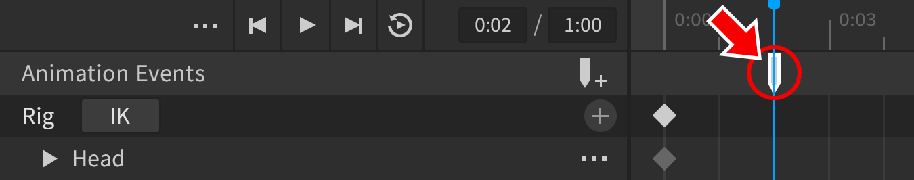
Detecting Events
To detect animation events in a LocalScript, connect a function to the AnimationTrack/GetMarkerReachedSignal|GetMarkerReachedSignal() function of AnimationTrack, for instance:
Event Parameters
As noted earlier, you can specify a Parameter value for any event marker within the animation editor. This lets you pass a custom string (single value, comma-separated string, etc.) to the AnimationTrack/GetMarkerReachedSignal|GetMarkerReachedSignal() function as illustrated by the paramString argument in the code example above. This string can then be parsed or converted, if necessary, and used for whatever action you wish to perform in the event.
Cloning Events
As you create events, they become available for usage throughout the animation, not only at the time position where you created them. For instance, you can create a “FootStep” event marker at the point where a character’s left foot touches down, then use the same event when the character’s right foot touches down.
To clone an event:
- Click an event marker in the event bar.
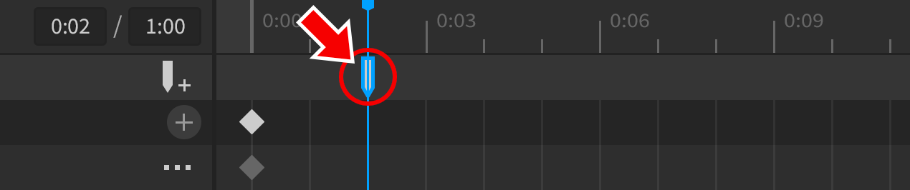
- Press Control+C (Command ⌘+C on Mac).
- Move the scrubber bar to the point where the event should be cloned and press Control+V (Command ⌘+V on Mac).
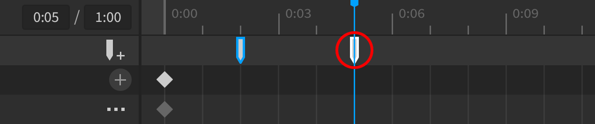
Saving and Exporting
Once you’re satisfied with an animation, you can either save it as a KeyframeSequence object or export it to Roblox for use in your games.
Saving to Project
To save an animation as a KeyframeSequence:
- Click the button in the upper-left section of the editor window.
- Select Save or Save As from the context menu to save the animation as a child of the AnimSaves object (itself a child of the rig).
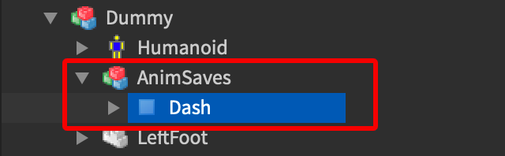
KeyframeSequence is not used to load the animation in a game. See the next section for details on exporting an animation for in-game use.
Exporting to Roblox
To use an animation in an actual game, you must export it to Roblox and note the assigned asset ID.
- Click the button in the upper-left section of the editor window.
- Select Export from the context menu.
- Decide whether to create a new animation or overwrite an existing one.
- Once the upload is complete, you can copy the animation’s asset ID by clicking the “copy” button in the export window. This ID is required for scripting animations as outlined in
/articles/using animations in games|Using Animations in Games.
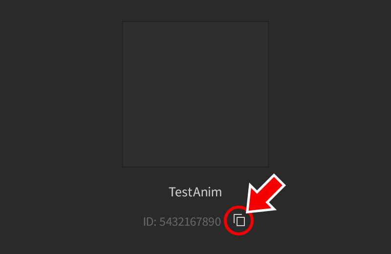
Important Settings for Default Character Animations
If your animation will be used for a default Roblox character animation like jumping or running, as outlined /articles/using animations in games|here, you must rename the final keyframe End (with a capital E). This can be done by right-clicking the final “select all keyframes” symbol in the upper bar and choosing Rename Key Keyframe.
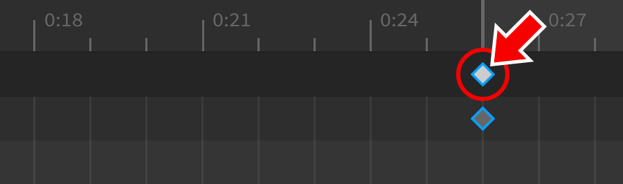